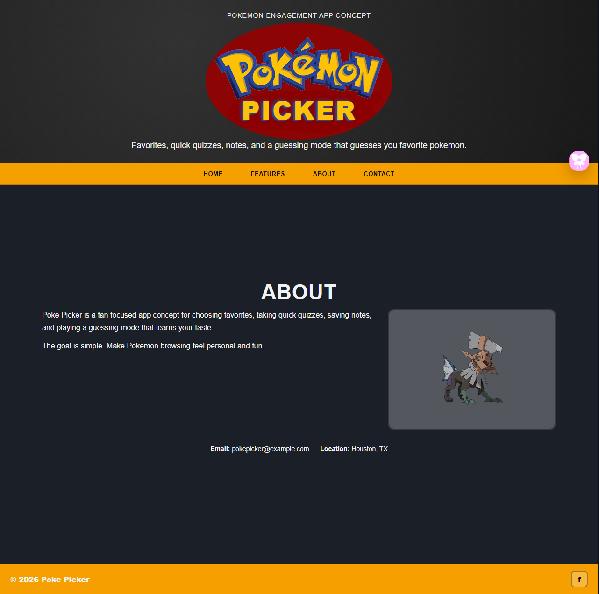
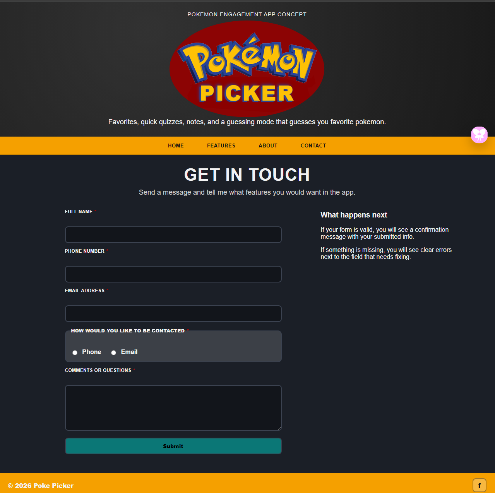

Objective
Create a Pokémon themed website where users can learn about Pokémon, choose a Pokémon from the carousel, and try to catch that Pokémon by guessing a number between 1 and 10.
Case Study
Pokémon themed web app with an API carousel and guessing game.

Create a Pokémon themed website where users can learn about Pokémon, choose a Pokémon from the carousel, and try to catch that Pokémon by guessing a number between 1 and 10.
The Poke Picker Web App is similar to interactive Pokémon websites, browser games, and Pokémon fan-content sites. The purpose of this project was to build something users could click on, enjoy Pokémon content with, and play without needing a download or account.
With the Pokémon theme styled throughout, users visit the homepage where they are presented with the Poke Picker game. Users try to guess a number between 1 and 10. Before guessing, users can also select a Pokémon from the carousel if they would prefer to catch that Pokémon instead of a random one.
I used JavaScript to control the carousel, game logic, sprite display, contact form validation, and light/dark mode toggle. I also had to think through how the selected Pokémon and random Pokémon would work together so the game did not feel confusing to the user.
Pokémon fans and visitors can learn about Pokémon through the Poke Picker Web App while interacting with the site instead of only reading static content.
Interactive elements include a catching game, carousel, sprite loader, light/dark mode toggle, and a contact form with validation. The final project connects back to the original objective because users can select Pokémon, play a simple guessing game, and see visual feedback after interacting with the app.
Project Images

